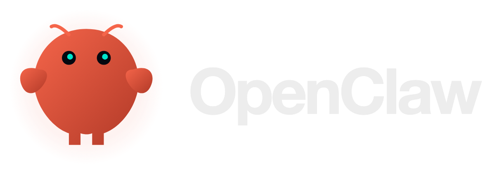
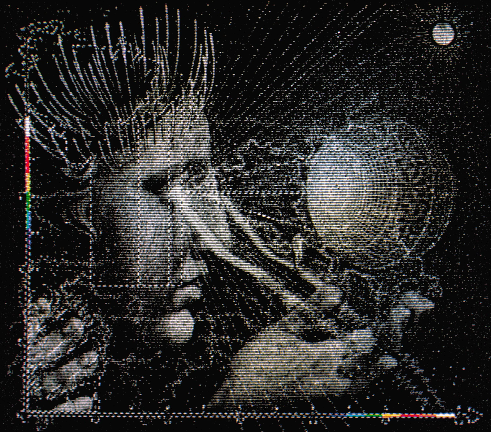
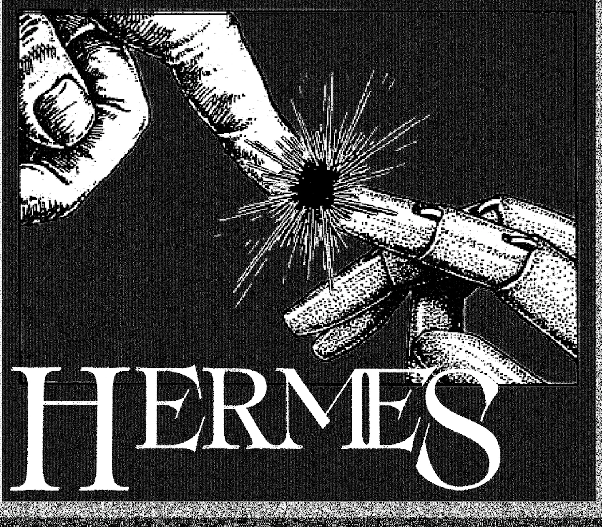
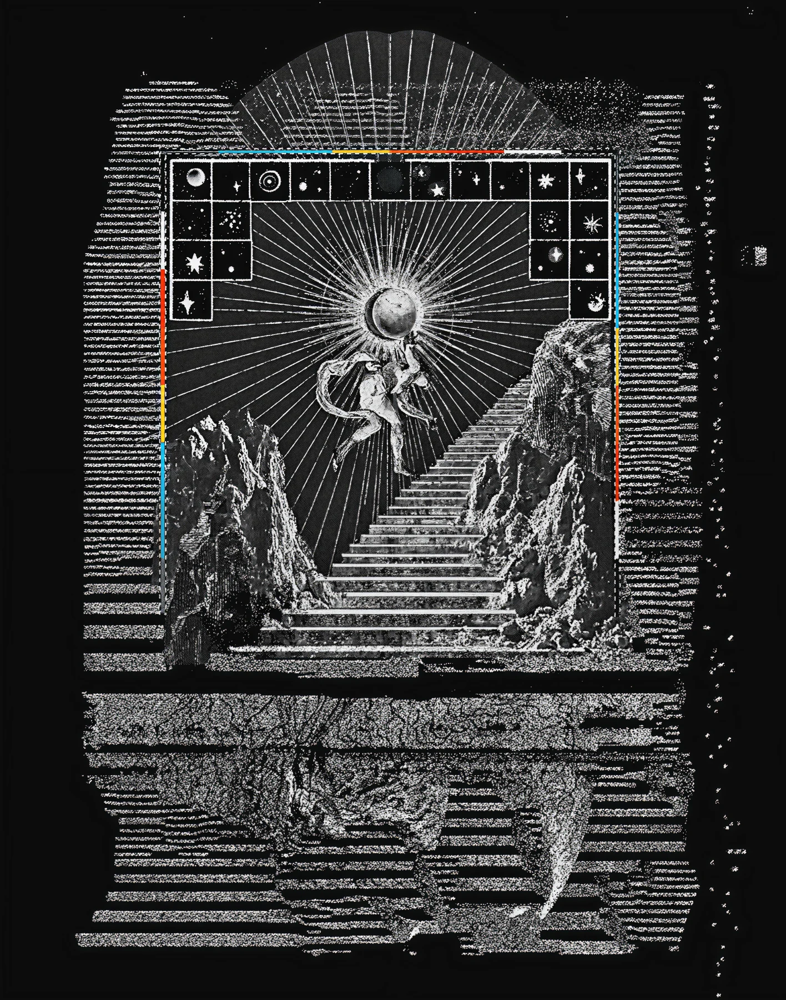

Servere
& agenți.
calculatoare care nu dorm, și AI-ul care lucrează pe ele.
OpenClaw☤ Hermes
Anatomia unui agent.

◆ Creiermodelul: Claude, GPT, local
Mâiniunelte: shell, browser, fișiere, API-uri
Memoriefișiere Markdown, bază de date
CanaleTelegram, WhatsApp, Discord, email
Ceascron, heartbeat: lucrează și când taci
Rețeteskills: SKILL.md, la fel ca în Claude Code

- 01asistent personal pe device-urile talelaptop, Mac mini, VPS
- 02îi scrii unde scrii dejaWhatsApp, Telegram, Discord, iMessage, Slack + 20
- 03modelul se schimbă ca o baterieClaude, Codex, modele locale
- 04open-source, fără abonamentOpenClaw Foundation · non-profit

conversație pe WhatsApp · docs.openclaw.ai

HERMES
NOUS RESEARCH · MIT · „AGENTUL CARE CREȘTE CU TINE”
Ce știe Hermes.


